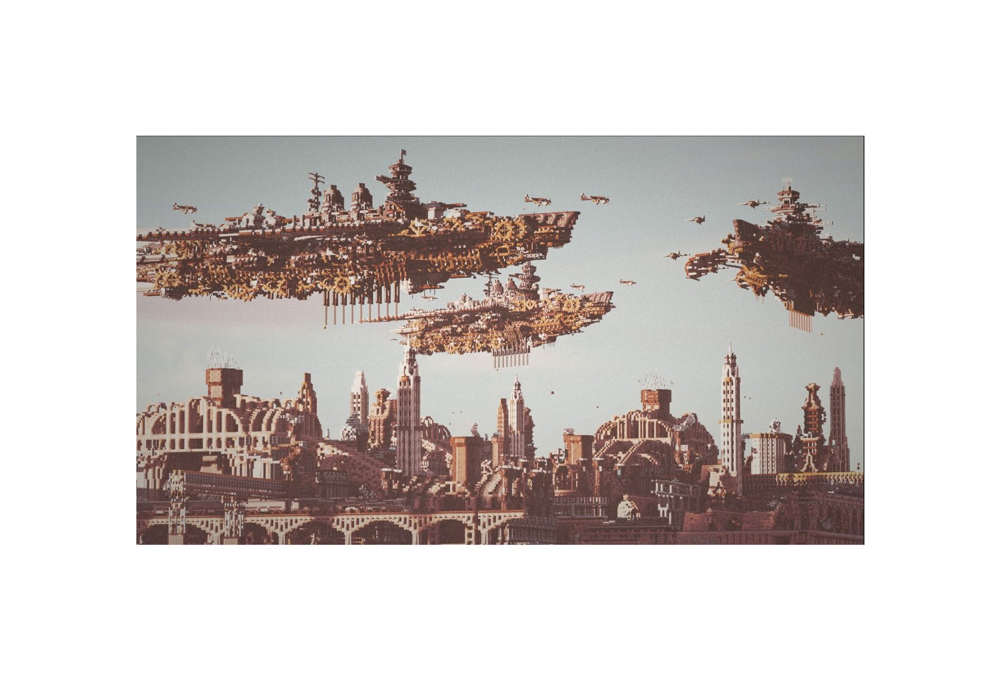
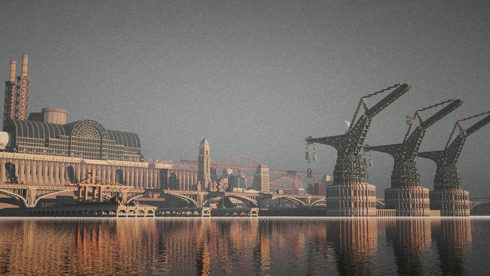
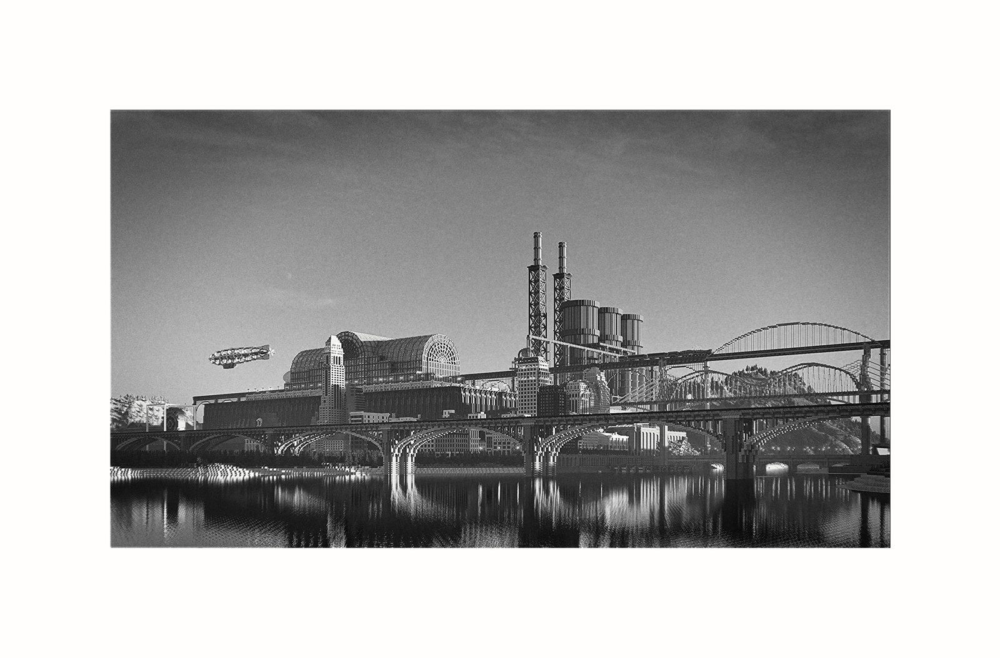
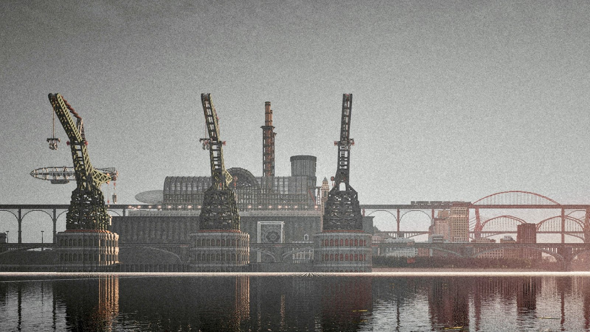
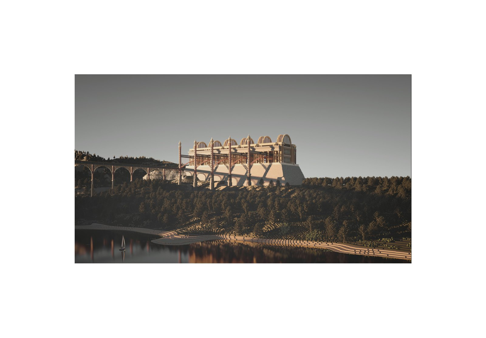

Pixel: Automata's Heart is a steampunk-themed RPG project built across a 3000 × 3000 map. The story unfolds in a virtual steam mountain-city — imagined as a cross between Hong Kong and London — the frontline city of the Glorian Empire in its resistance against a machine rebellion. The world layers airship docks, cranes, and dense industrial waterfronts into a single continuous build.
像素 · 人偶之心 是一个蒸汽朋克题材的 RPG 项目，建造于 3000 × 3000 的大地图之上。故事发生在一座虚构的蒸汽山城——可视为香港与伦敦的结合体——它是格罗里亚帝国抵抗机械叛乱的前线城市。飞艇码头、起重机与密集的工业水岸被层叠进一座连续的城市之中。
The build is currently around 20% complete and on hold pending technical work; planned releases include Bedrock Edition and NetEase's Minecraft China Edition, alongside a plotless Java map on PlanetMinecraft.
项目目前建造完成度约 20%，因技术问题暂时搁置；计划登陆基岩版与网易《我的世界》中国版，并在 PlanetMinecraft 发布无剧情的 Java 版地图。
View on PlanetMinecraft ↗



